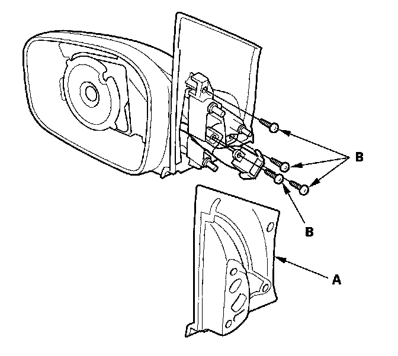
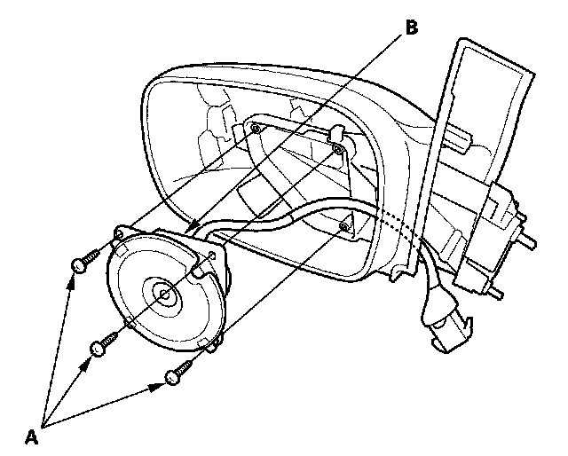

2-Door
Power Mirror Actuator Replacement2-door
1. Remove the mirror holder.
2. Remove the power mirror.
3. Disconnect the 8P connector from the power mirror.

4. Remove the gasket (A).
5. Remove the T10 TORX screws (B).

6. Remove the T10 TORX screws (A) and the mirror actuator (B).
7. Install the power mirror actuator in the reverse order of removal.